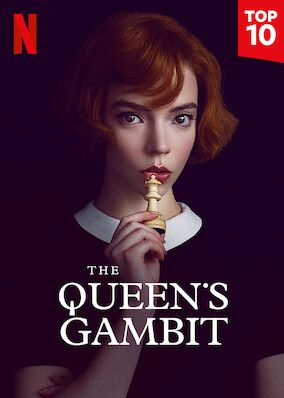
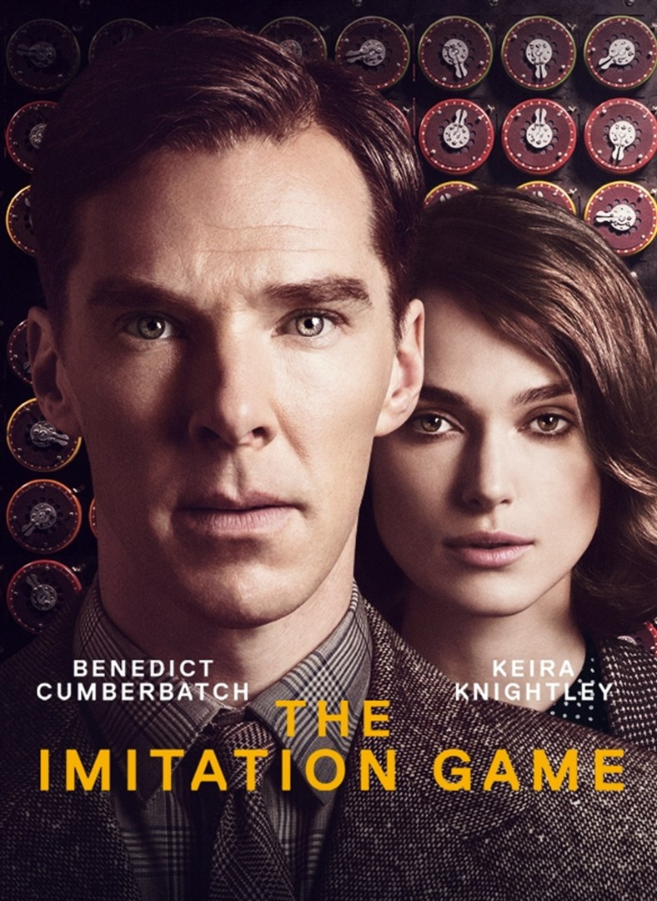

My Favorite TV Shows
There are a lot of great TV shows out there. Let's take a look at some of my favorite ones.
- Dark

- Queen's Gambit

- The Imitation Game

Favorite TV Show: The Imitation Game
My favorite TV show is The Imitation Game because:
- It's about the history behind the first computer, I love all about technology.
- It shows that mathematicians are not only involved with numbers.
-
Everything was based on a very exciting field of mathematics, cryptography.
If you had to choose a TV show between the three I mentioned, which one would you choose?